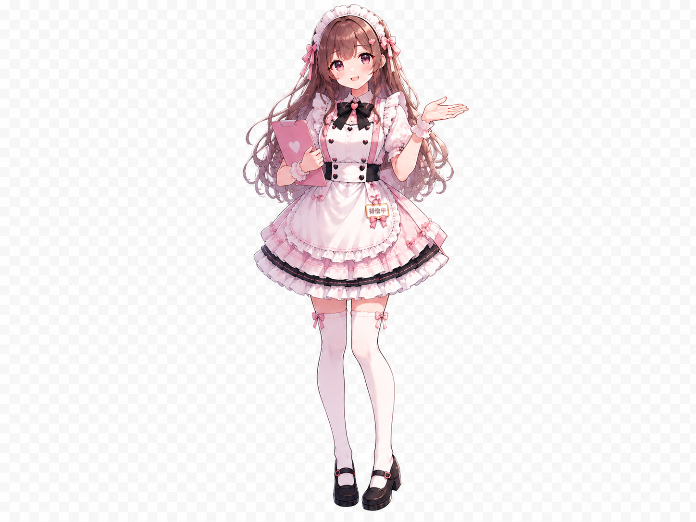

PO・TORO TRAINING GAME
新人メイド
研修シミュレーター
新人メイドさんとして、出勤準備からお見送りまでの流れを体験しながら、 正しいお給仕を学びましょう♡
HOW TO PLAY
あそび方
先生メイドの説明を読み、右側の確認問題に答えてください。 正解すると、接客力・会話力・安心安全・気配り・ポ・トロ理解度が上がります。
第1章
研修中
メイド名を決めよう
POINT! 重要ポイント

先生メイド
RESULT
研修結果
A